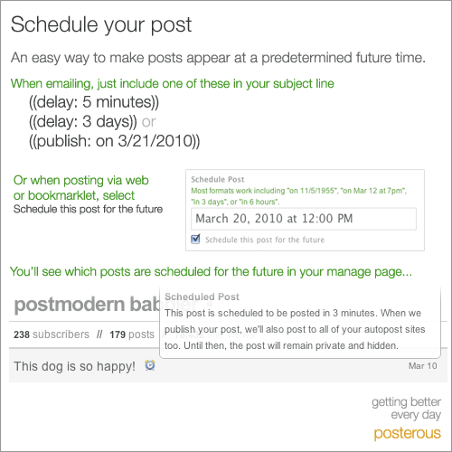

Ruby the Red Gem of Programming
This is an archived post This is an archived post
Previous
Index
Next
Posterous Now Lets You Schedule Posts for Later
June 8 2010, 6:00 AM
by Victor Goff
Schedule your post via e-mail or the bookmarklet.

via
mashable.com
Tags
instructions, posterous, private
34 views and 0 responses